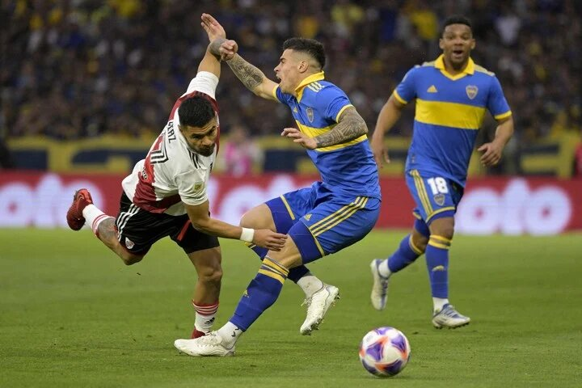

No esta terminado, River
No sirvió de mucho la sorpresa que pretendió Gallardo desde el arranque. Esa línea de tres que en realidad fueron cinco defensores no fue una réplica de aquella recordada de la primera final de la LIbertadores 2018. Esa vez fue una aplanadora que ahogó a Boca y se lo llevó puesto a pesar de haber terminado 1-2 el primer tiempo. Hoy fue otra cosa: aplacada, defensiva y con poca llegada por las bandas. A eso hay que sumarle que Juanfer casi no estuvo presente. Errático y sin contacto con la pelota, al Nalgón se lo comieron entre los volantes de Boca y partido mismo que el colombiano nunca encontró. Y eso que el juego daba para que ante la primera pelota robada en mitad de cancha saliera su pase filtrado para Suárez o Solari. Pero nada. Nada de nada.
El miércoles será contra Banfield. Hay que ganar ese para olvidar este mazazo. También habrá que ganar el domingo contra San Lorenzo. Creo que en esos dos partidos podría definirse el año de River. Será saber si habremos cerrado 12 meses para el olvido o si aún hay esperanzas. Luego, el tiempo, la realidad del resto y, ahora sí, la suerte externa que vamos a necesitar, nos pondrán en el lugar que realmente merecemos.